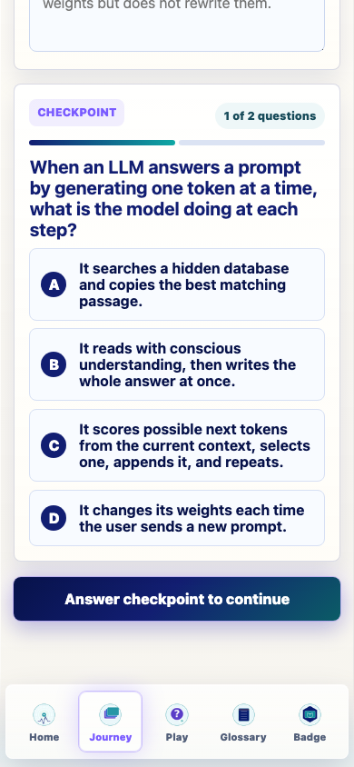
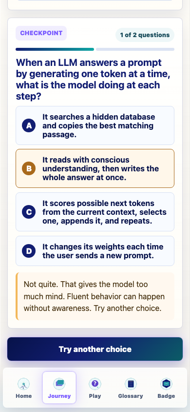
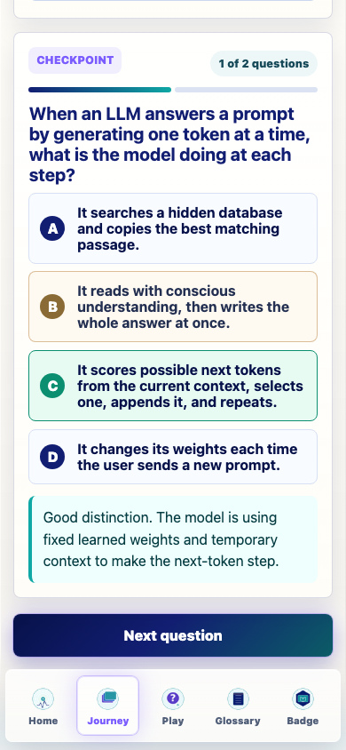
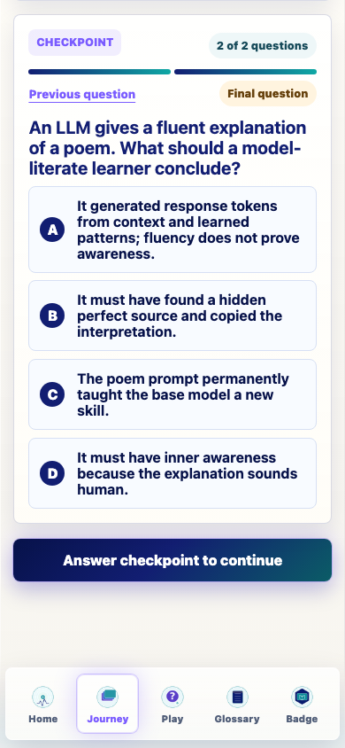
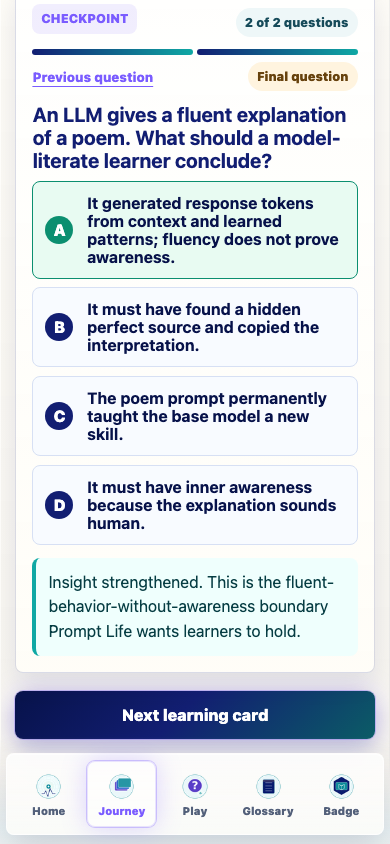
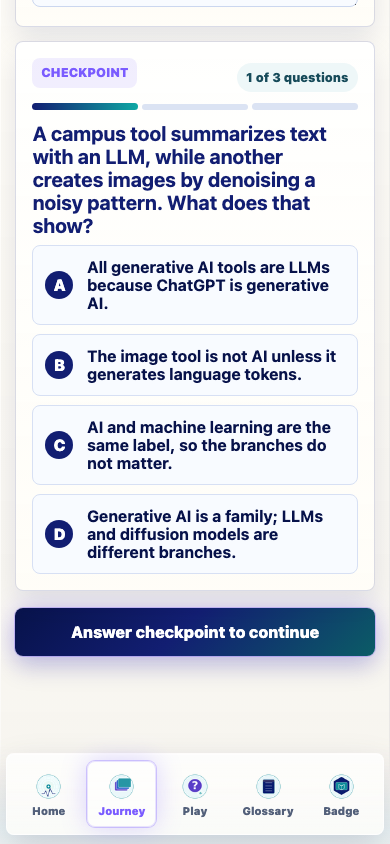
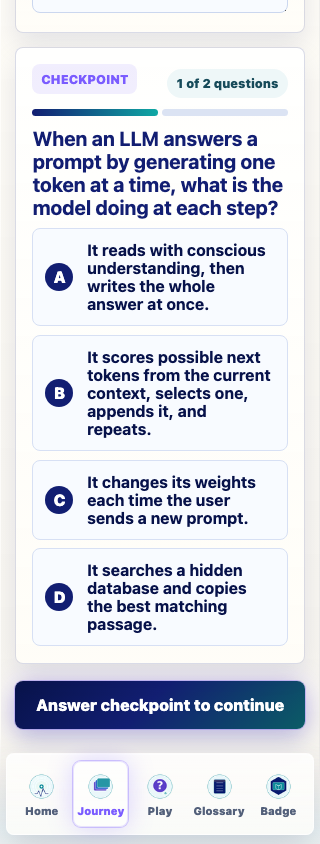
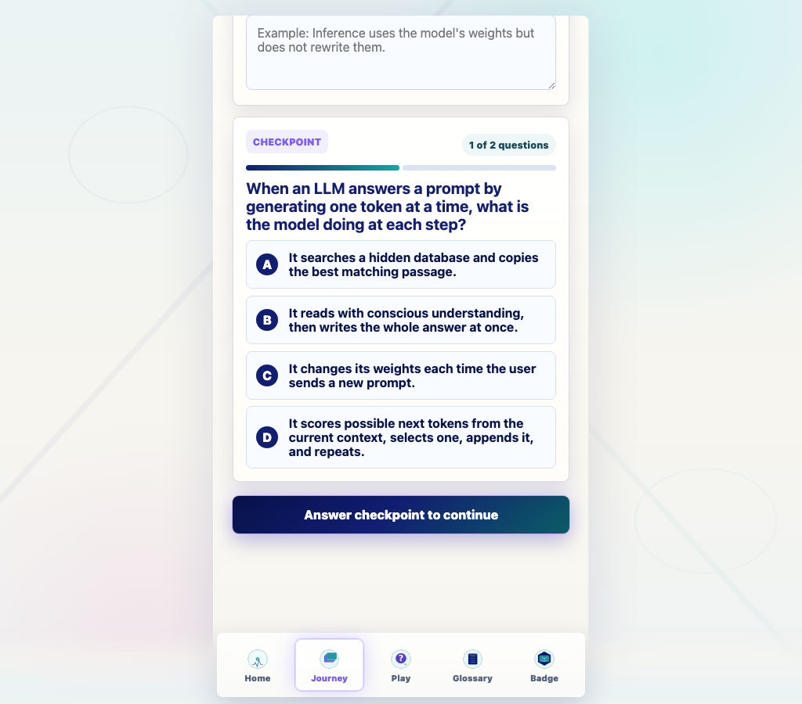

Prompt Life v0.27.9 First-Six Checkpoint Revision Report
Generated June 9, 2026. Active bank: v0.27.9-first-six. Version: 0.27.9.
1. What changed
Prompt Life v0.27.9 makes the revised first-six model-thinking checkpoint bank active by default for development testing. The first six Journey cards now use multi-question checkpoints while the remaining 33 cards keep their current single-question checkpoints.
2. Files changed
src/main.tsx
src/utils/choiceOrder.ts
src/data/checkpointBankV0279.ts
scripts/audit-checkpoints.mjs
scripts/generate-checkpoint-live-pilot-v0279.mjs
README.md
docs/REVIEW_NOTES.md
package.json and package-lock.json
v0.27.9 JSON, Markdown, HTML, PDF, QA evidence, and screenshot files under docs/journey.
3. Version
The app/package version is 0.27.9. For iPhone Safari testing, use a cache buster such as ?v=0279 and confirm the Badge page shows v0.27.9.
4. Active scope
Active by default only for: What Is an LLM?, Where LLMs Fit, Rationalists vs Empiricists, Training, Pretraining, and Overfitting and Generalization.
5. Bank totals
Learning cards revised: 6
Questions: 19
Choices: 76
Wrong-answer distractors: 57
6. Card counts
Card
Questions
Human review edits
What Is an LLM?
2
['Q1 correct answer shortened.', 'Q2 stem and correct answer revised for model-literate judgment.']
Where LLMs Fit
3
['Q1 denoising wording.', 'Q2 shorter correct answer and length-balanced distractors.']
Rationalists vs Empiricists
3
['Q2 replaced weak retrieval distractor with confidence/probability distractor.', 'Q3 correct answer and feedback tightened.']
Training
4
['Q1 replaced softmax-truth distractor.', 'Q2 rewritten as a positive stem.', 'Q4 replaced diffusion distractor with user-correction misconception.']
Pretraining
4
['Q2 avoids conscious-recall wording.', 'Q3 replaced citation-list distractor.', 'Q4 avoids seems-to-know stem and clarifies source-like output is not evidence.']
Overfitting and Generalization
3
['Q1 replaced RAG distractor.', 'Q2 replaced context-window distractor.', 'Q3 rewritten without fine-tuning as the main frame.']
7. New card content
What Is an LLM? (2)
v0279-what-is-llm-q1: When an LLM answers a prompt by generating one token at a time, what is the model doing at each step? Correct: It scores possible next tokens from the current context, selects one, appends it, and repeats.
v0279-what-is-llm-q2: An LLM gives a fluent explanation of a poem. What should a model-literate learner conclude? Correct: It generated response tokens from context and learned patterns; fluency does not prove awareness.
Where LLMs Fit (3)
v0279-where-llms-fit-q1: A campus tool summarizes text with an LLM, while another creates images by denoising a noisy pattern. What does that show? Correct: Generative AI is a family; LLMs and diffusion models are different branches.
v0279-where-llms-fit-q2: When people say an LLM sits inside the broader AI family, which category map is most useful? Correct: AI is broad; machine learning learns from data; deep learning uses layers; generative AI creates outputs; LLMs focus on language/code.
v0279-where-llms-fit-q3: A chatbot product includes an LLM, a search tool, safety filters, and a user interface. What is the LLM? Correct: The language-generating model inside the larger product.
Rationalists vs Empiricists (3)
v0279-history-q1: If a system solves a task only by following hand-written if-then rules, how is it different from an LLM? Correct: The rule-based system applies explicit rules; an LLM’s fluency mostly comes from learned weights shaped by examples.
v0279-history-q2: During deep-learning training, why does the system measure loss? Correct: Loss measures prediction error so an optimizer can adjust weights.
v0279-history-q3: A university AI app uses an LLM plus policy filters, retrieval, and hand-written rules. What should a model-literate user conclude? Correct: Modern AI products can combine learned models, rules, tools, and policies; the LLM inside is still a learned-pattern model.
Training (4)
v0279-training-q1: During training, the model predicts a target token and gets it wrong. What makes that moment learning rather than ordinary inference? Correct: The training process uses the loss signal to update weights.
v0279-training-q2: A student asks a chatbot one question during ordinary use. Which statement is usually true? Correct: The model uses fixed weights and temporary context; the chat usually does not rewrite the weights.
v0279-training-q3: Why can training change how the model behaves tomorrow, while inference usually cannot? Correct: Training changes parameters that future runs reuse; inference uses temporary computations for the current run.
v0279-training-q4: In a training loop, which sequence is the durable learning path? Correct: Example -> prediction -> loss -> weight update.
Pretraining (4)
v0279-pretraining-q1: During pretraining, what signal teaches the model broad language patterns across many examples? Correct: Repeated prediction error/loss from next-token targets changes weights over many training steps.
v0279-pretraining-q2: Why can pretraining create broad capability without making the model a perfect library of its sources? Correct: It shapes statistical patterns in weights; it does not create a searchable copy of every source.
v0279-pretraining-q3: If pretraining examples include many styles and task shapes, what can change inside the model? Correct: Weights can shift so future prompts activate more useful language/code patterns.
v0279-pretraining-q4: A base model produces fact-like text about public topics. What is the model-literate explanation? Correct: Pretraining shaped weights with patterns from data, so the model may generate fact-like text without retrieving the original page.
Overfitting and Generalization (3)
v0279-overfitting-generalization-q1: A model gets every training example right but fails on new validation examples. What problem is showing up? Correct: Overfitting: the model fit training examples too narrowly instead of learning patterns that generalize.
v0279-overfitting-generalization-q2: Why do model builders test on held-out validation data instead of only training examples? Correct: Held-out data checks whether learned patterns work on examples the model did not train on.
v0279-overfitting-generalization-q3: A model trained heavily on one narrow answer template works on that template but struggles with varied new prompts. What should a model-literate learner suspect? Correct: It may have fit the narrow examples too closely instead of learning a pattern that generalizes.
8. Human review notes applied
Applied requested edits: shortened first-card correct answer, added Where LLMs Fit model-vs-product question, tightened loss/confidence language, rewrote Training Q2 as a positive ordinary-use stem, removed conscious-recall wording from Pretraining, and reframed Overfitting Q3 without fine-tuning as the main frame.
9. Runtime behavior
src/main.tsx now selects the v0.27.9 bank for the first six lessons unless legacy fallback is requested. The UI shows a development pilot note on those active cards.
10. Legacy fallback
Use ?legacyCheckpoints=1 or ?checkpointBank=legacy to restore the previous single-question checkpoint behavior. Browser QA confirmed the fallback showed 1 of 1 question and removed the pilot note.
11. Stable IDs and randomization
The choice-order helper now supports object choices with stable choiceId values while preserving older string choices. Correctness follows answer identity, not visible A/B/C/D position.
12. Feedback behavior
Wrong answers keep the correct answer hidden and show selected-choice feedback. Correct feedback uses the authored feedback without duplicate “Insight unlocked” wording when the authored sentence already starts with a success lead.
13. Progress and badge impact
Journey completion logic and the single badge model remain unchanged. The first six cards require their active checkpoint questions in sequence; later cards retain their current single-question checkpoint.
14. Mobile QA
390px final state: {'title': 'What Is an LLM?', 'count': '2 of 2 questions', 'overflow': False, 'primary': 'Next learning card', 'stickyBottom': 739, 'navTop': 753}
390px second-card state: {'title': 'Where LLMs Fit', 'count': '1 of 3 questions', 'question': 'A campus tool summarizes text with an LLM, while another creates images by denoising a noisy pattern. What does that show?', 'overflow': False, 'primary': 'Answer checkpoint to continue', 'stickyBottom': 656, 'navTop': 753}
320px state: {'title': 'What Is an LLM?', 'count': '1 of 2 questions', 'overflow': False, 'width': 320}
Desktop state: {'title': 'What Is an LLM?', 'count': '1 of 2 questions', 'overflow': False, 'width': 1024}
Legacy fallback state: 1 of 1 question; pilot return state: 1 of 3 questions.
15. Screenshots

what is llm q1 390

what is llm q1 wrong no reveal 390

what is llm q1 correct next question 390

what is llm q2 390

what is llm final next learning card 390

where llms fit q1 390

what is llm q1 320

what is llm q1 desktop
16. Verification commands
npm run typecheck: passed.
npm run build: passed with the existing Vite large-chunk warning.
npm run build:pages: passed with the existing Vite large-chunk warning.
npm run audit:answers: passed and includes checkpoint-bank validation.
The production bundle still reports the existing Vite large-chunk warning. The in-app Browser screenshot API timed out during late QA, so fresh screenshots were captured with local Python Playwright instead. No functional blocker found.
19. Not changed
No new Journey cards, no generated app PNG assets, no new games, no badge changes, no progress reset/migration, and no dependency additions.
20. Ready for testing
v0.27.9 is ready for main-branch/iPhone testing as an active-development checkpoint pilot. The next best pass is learner review of the first-six distractors after several mobile test runs.